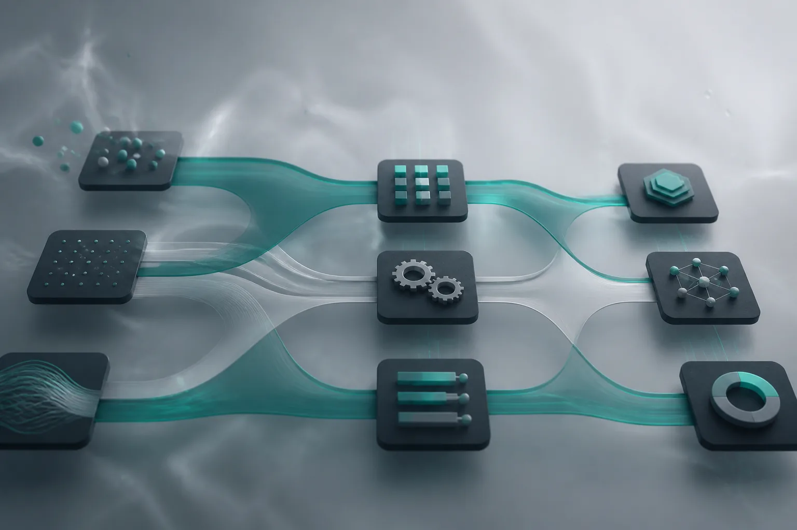
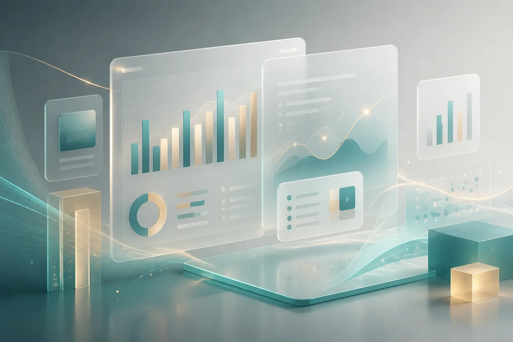
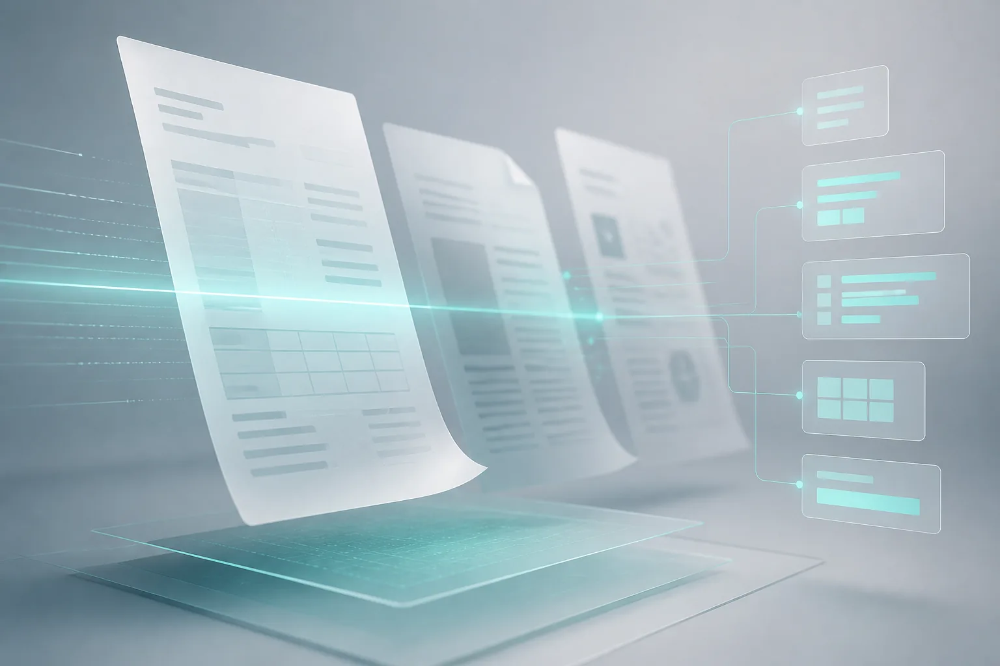
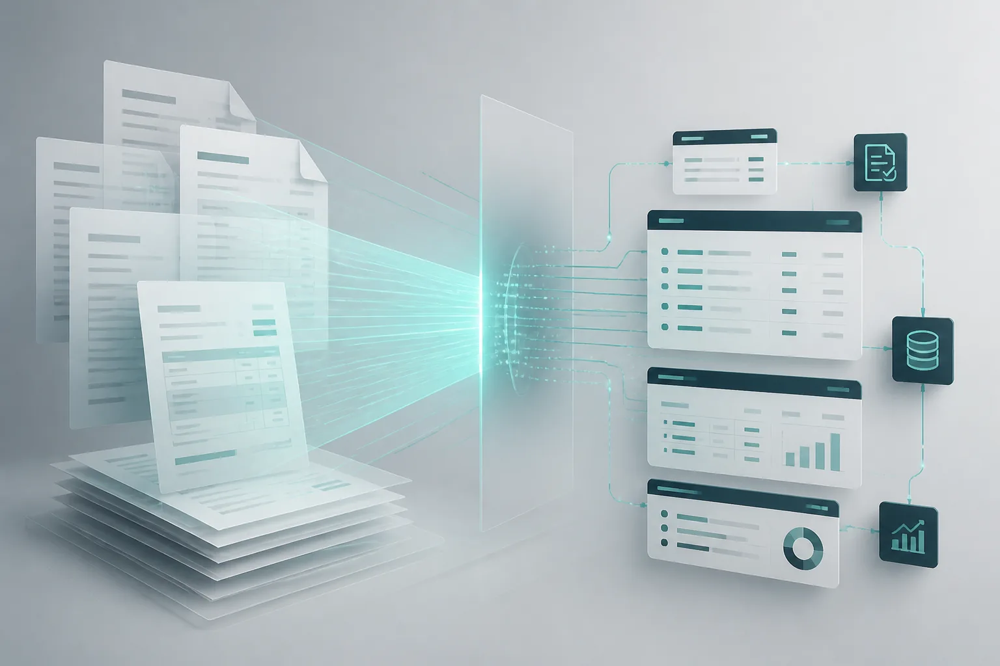
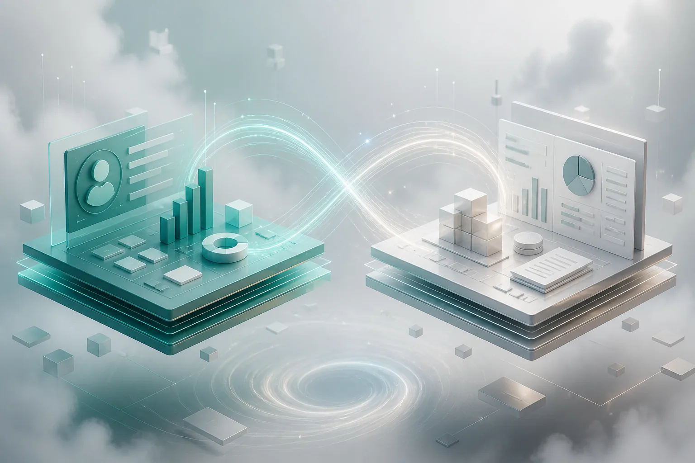
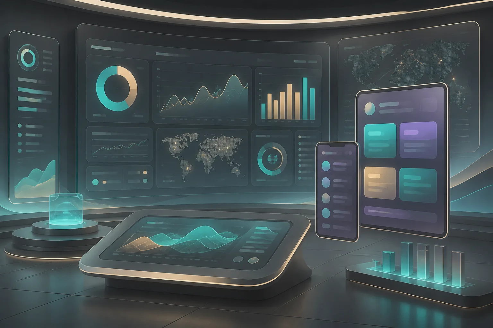
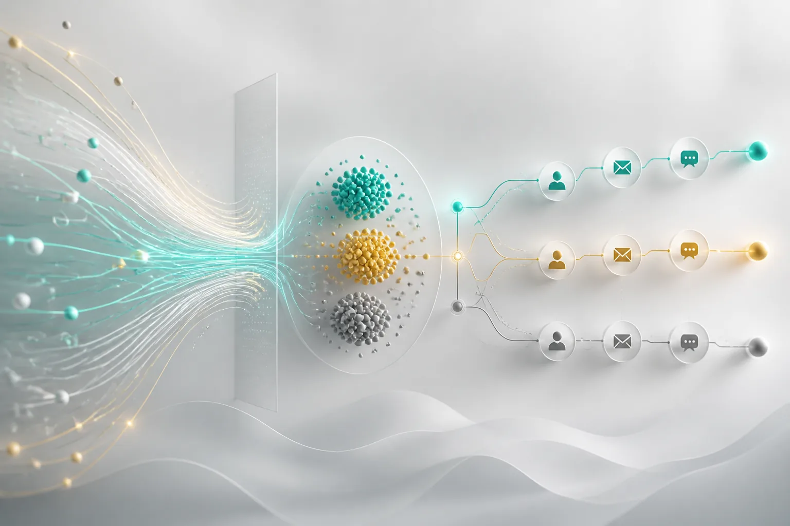

01
AI Agents & Assistants
Custom agents for research, support, knowledge, and multi-step tasks—with guardrails and human handoff.
Los Angeles · AI & Automation
Christina Jaramillo
Intelligent systems that remove busywork—so teams can focus on the work that actually moves the business.

AI with restraint.
I design practical AI and automation for founders and operations leaders—grounded in real workflows, not hype decks.
From agents and CRM/ERP sync to Power BI and document intelligence, LoveThisLife ships systems people can trust.
Solutions & services
Five focused offerings—each revealed as you scroll.
Custom agents for research, support, knowledge, and multi-step tasks—with guardrails and human handoff.

Orchestration across CRM, ERP, email, and ops—approvals and follow-ups without chasing.
Salesforce, HubSpot, NetSuite, SAP, Dynamics—one story across systems.

Dashboards and low-code apps on Power Platform—wired to CRM, ERP, and Dataverse.

Extract, classify, and route invoices and contracts into the systems you already use.
Capabilities
Deep enough to ship production systems. Clear enough for stakeholders.
Experience & projects
Real systems shipped into live ops—with images, outcomes, and the stack behind each engagement.
Designed and shipped a grounded support agent across 14,000+ help articles and release notes. Escalation rules route edge cases to specialists; every reply syncs notes into HubSpot. Accuracy monitored with a labeled weekly eval set before expanding coverage.

Document AI extracts vendor line items, matches purchase orders, and flags exceptions to Slack with a human approve gate. Approved invoices post to QuickBooks with attachments and audit IDs—ending Friday inbox triage across three finance seats.

Bi-directional sync between Salesforce and NetSuite for accounts, opportunities, quotes, and fulfilled orders. Conflict rules, idempotent webhooks, and exception queues keep finance and sales aligned without nightly spreadsheet merges.

Built a Power BI semantic model over CRM and ERP for pipeline, fulfillment, and SLA health—paired with a Power Apps form for field updates that write back to Dataverse and trigger Power Automate approvals.

Automated scoring, enrichment, and personalized first-touch drafts with mandatory human approval before send. Salesforce ownership, sequence enrollment, and SLA timers keep follow-up consistent across a distributed sales pod.
RAG assistant over SOPs, playbooks, and product changelogs with citation links and role-based access. Logging and feedback loops feed content gaps back to enablement so the knowledge base stays current under real usage.
How I work
Discover
Map process, tools, and failure points. Find where AI helps—and where simple automation wins.
Architecture, metrics, and human checkpoints. Prototype the critical path before full build.
Integrations, agents, monitoring. Harden edge cases for real volume.
Train the team, document runbooks, leave a system they can run independently.
About
Founder, LoveThisLife · Los Angeles
I show up for every client with clear energy and follow-through—building AI and automation that feel invisible when they work, and transparent when they don’t.
Based in Los Angeles, I partner with startups and established companies who want fewer manual loops and clearer operational leverage.